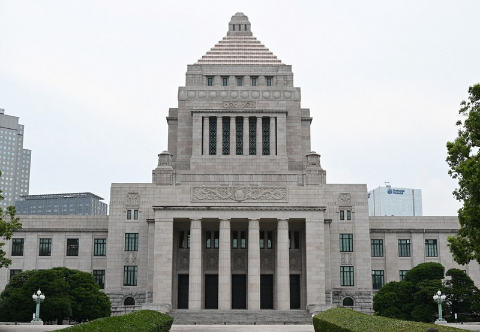
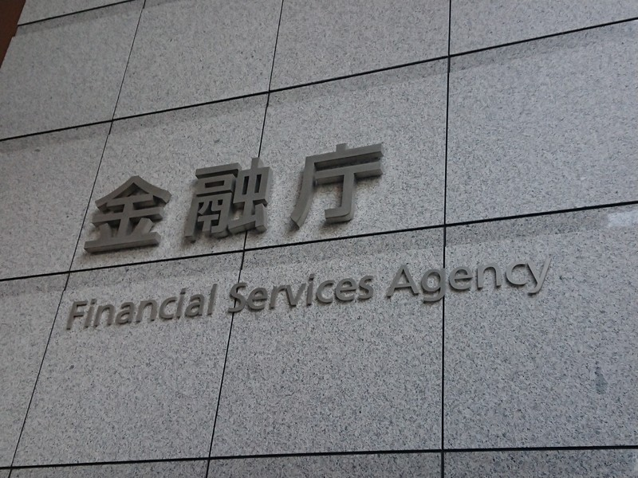

01【売上14倍】アンソロピック、「史上最大のIPO」の中身
発行日時：2026年10月27日 05:30:01 JST
あなたに関係ありそうな理由
AIサービスの売上が伸びる一方、計算資源への投資、会計上の損失、AIの安全性をどう説明するかは、技術を事業に取り入れる会社にも関係します。成長の速さと資金需要を一緒に見る材料になります。
概要
アンソロピックは10月26日、米証券取引委員会（SEC）に、計画中の新規株式公開（IPO）に関する登録書類S-1を提出し、財務と事業の概要を明らかにした。これは上場準備の進展を示すが、書類はまだ発効しておらず、上場が済んだわけではない。サンフランシスコに本拠を置く同社は、対話型AI「Claude」や基盤モデルを開発する。2021年、AIの開発方針をめぐってOpenAIを離れたダリオ・アモデイらが創業し、できるだけ速く、かつ安全に、超知能システムをつくることを掲げてきた。創業者たちは上場書類でAIを大きな恩恵とリスクの両面から説明し、制御を失う可能性や、権威主義的な目的に悪用される危険も開示した。
成長の数字は急伸している。2026年上半期の売上高は163億ドルで、前年同期の14倍。収入の大部分はClaudeなどを使う企業から得ている。成長を支える転機として記事が挙げるのは、コード生成に強いAI製品だ。2022年のChatGPT登場後しばらく目立たなかったアンソロピックは、昨秋にコーディング向けチャットボットを更新し、世界のテクノロジー企業で採用が進んだ。未上場の段階で調達した資金は約1300億ドルにのぼると記事は伝える。
一方、同じ期間の純損失は807億ドル超。前年の130億ドルから拡大したが、損失には転換社債に関連する724億ドルの一時的な非現金費用が含まれる。したがって、純損失額を通常の営業支出や現金流出と同じものとして読むことはできない。IPOで1000億ドル超を調達し、企業価値2兆ドルに達するとの見方も記事中で紹介されるが、いずれも可能性として報じられたもので、調達額や株数、価格は確定していない。記事によればティッカーは「ANT」を予定し、ゴールドマン・サックスとモルガン・スタンレーが主幹事を務める。
AI需要が鈍った場合に巨額の計算資源投資を回収できるのか、市場環境が上場計画にどう影響するのか、さらにAIのリスク管理をどう説明し続けるのかが焦点になる。公開された数字は、急成長と大きな投資負担を同時に示している。
表示コメントでは、創業者の議決権や中国企業との競争、長期の計算資源契約が上場後の収益に与える影響も論点になった。純損失と営業損失を分けて読む指摘もある。財務の伸びだけでなく、公開市場の期待の中で創業時の使命を保てるかという問いも寄せられた。
仕事や会話で使える一言
「売上の伸びだけでなく、損失の中身と資金の使い道も見ていますか？」
NewsPicksで原文を読む
02副首都指定要件を閣議決定 候補は4道府県、広島・群馬は外れる
発行日時：2026年10月27日 23:04:15 JST

あなたに関係ありそうな理由
災害時に行政機能をどう継続するかを、政府の具体的な基準と日程から考えられます。住まいや地域の事業継続を考える際にも、自治体の防災計画を読む視点になります。
概要
政府は10月27日、7月に成立した副首都法に基づく指定要件を閣議決定した。候補は北海道、愛知、大阪、福岡の4道府県で、政府は各地域がすべての要件を満たすと説明する。広島と群馬は、人口などの条件を満たさず候補から外れた。要件には、国の出先機関が14以上あること、国内人口の1.2％以上を占める政令指定都市を持つこと、国内総生産（GDP）の2.1％以上に相当する経済規模などが含まれる。
東京圏との同時被災を避けるため、首都直下地震緊急対策区域や富士山の火山災害警戒地域は対象から除かれる。政令市を特別区に再編するか、政令市と道府県が連携協約を結び、必要な体制を構築することも求められた。副首都法は大規模災害時に首都機能を代替する地域を定める制度で、指定地域は規制緩和や税制優遇の対象になり得る。地域の名称だけでなく、行政の仕組みを整えることが条件に入っている。
政府は10月30日に高市早苗首相を本部長とする副首都整備推進本部を設置し、検討を本格化させる予定。11月には副首都のあり方について基本的な考え方を公表する方向だ。要件案については10月3日から16日まで意見を募り、総務省によると291件が寄せられた。政府は30日に意見の内容を公表するとしている。
与党の日本維新の会は大阪府への指定を目指し、制度づくりを主導してきた。一方、総務省関係者は複数地域が指定される可能性にも言及し、一部野党からは「大阪ありきではないか」との声が出ている。今後は数値基準の妥当性に加え、複数地域をどう扱うかが焦点になる。表示コメントには、災害リスクの想定が広がった経緯から北海道が候補に入るのは自然だという見方もある。
表示コメントには、要件を満たすだけでは実際の代替機能は動かず、移す行政業務や人員、システムを設計すべきだという指摘がある。北海道と札幌市の役割分担を求める声や、制度の目的を災害時の首都機能代替と地域振興に分けて考える意見も出た。さらに、戦争やサイバー攻撃も行政機能を止める脅威として備えるべきだというコメントもあり、要件を満たすだけでは足りず、担当者やシステム、自治体間の権限分担を定め、有事を想定した訓練も必要になると考えられる。
仕事や会話で使える一言
「基準を満たす地域だけでなく、移す行政機能まで決まっているのでしょうか。」
NewsPicksで原文を読む
03ひろがる「海洋散骨」…その費用は？ 手順は？ 法的問題は？
発行日時：2026年10月27日 06:00:00 JST
あなたに関係ありそうな理由
墓じまいや供養の選択肢を考える家族に、手順、費用、環境への配慮を具体的に知る材料になります。遺骨をすべて散骨せず、一部を手元に残す方法も紹介されています。
概要
海洋散骨は、遺骨を細かな粉状にして海へ還す供養方法だ。墓地、埋葬等に関する法律に「散骨」の直接の記載はないが、何をしてもよいわけではない。厚生労働省は2021年に事業者向けガイドラインを公表し、日本海洋散骨協会の基準では焼骨を2ミリ以下に粉砕して、見た目で遺骨と分からない状態にする。記事が紹介する同協会の集計では、実施件数は2025年に6,690件となり、この7年で約6倍に増えた。
実施場所は漁場、養殖場、航路、海水浴場などを避け、周辺住民や他の利用者に配慮した沖合が基本となる。一部自治体は条例で規制している。取材先の法月株式会社は静岡の仏壇・仏具メーカーで、2020年に「ウーナ」として散骨事業を始めた。粉骨した遺骨を手元供養用に返すサービスに、海へ散骨できないかという問い合わせがあったことがきっかけだ。事業開始時は8海域だったが、船会社の理解も広がり、現在は全国36海域で実施している。
利用者には、海が好きだった本人の希望、墓を継ぐ人がいないこと、墓じまいで子や孫に管理の負担を残したくないことなど、異なる事情がある。法月の山本隆太氏によると、葬儀後1〜3年ほどたち、家族の同意が整ってから申し込む例も多い。墓じまいでは先祖を含めて10柱ほどを供養する場合もあり、費用が大きな負担になることがあるという。近親者は樹木葬や納骨堂、手元供養にし、それ以前の世代は海へ還すという分け方も紹介されている。
方法は遺骨を預ける委託、遺族が乗船する貸切、合同など。一般的な費用の目安は委託5万〜10万円、合同15万〜25万円、貸切25万〜30万円。法月の委託は粉骨込み1柱4万9800円、貸切は8人まで25万4100円で、申込みの8〜9割は委託だという。粉骨後は六価クロムを無害化し、遺骨を水溶性の袋に入れる。献花・献酒を控えて紙花を使い、写真や散骨証明書も遺族に届ける。すべてを海へ還すだけでなく、一部を小さな骨壺やケースに残す手元供養もあり、選び方は一つではない。
日本海側は11月から4月に海が荒れるため、依頼から実施まで最長半年ほど待つ場合もある。乗船型なら遺族が船の出航を見送ることができ、委託型では後日届く写真や証明書で実施を確かめられる。希望する参加の形と季節を先に相談しておきたい。
仕事や会話で使える一言
「費用だけでなく、家族の同意や海への配慮まで含めて選びたいですね。」
NewsPicksで原文を読む
04FX業者5社で顧客被害 GMO不正アクセスで金融担当相が公表
発行日時：2026年10月27日 10:47:40 JST

あなたに関係ありそうな理由
顧客の資金やログイン情報を扱うサービスでは、委託先や共通基盤を含む初動対応が重要です。被害報告と当局の注意喚起を分けて追える記事です。
概要
片山さつき金融担当相は10月27日の閣議後会見で、GMOインターネットグループが運営するFX向けサービスへの不正アクセスをめぐり、関連するとみられる業者5社から顧客被害の報告を金融庁が受けたと明らかにした。記事に挙がるのは、ゴールデンウェイ・ジャパン、OANDA証券、アヴァトレード・ジャパン、外為ファイネスト、デューカスコピー・ジャパン。片山氏によると、5社は対象顧客のパスワードを初期化するなど、被害拡大を防ぐ措置を講じている。
金融庁は公表の5日前にあたる10月22日、すべてのFX業者に、顧客へパスワード変更と身に覚えのない取引がないかの確認を促すこと、顧客取引のモニタリングを強化することなどを要請していた。今回の記事は、被害報告を受けた5社の名称と初動対応を伝える一方、被害人数、金額、取引内容がどこまで特定されたかは示していない。そのため、報告段階の情報を、被害の全体像が確定したという話に広げないことが大切だ。被害報告の5社と、金融庁が対策を求めた全業者は、対象の異なる情報として読む必要がある。
コメントでは、共通サービスへの攻撃が複数の金融事業者に及び得るとして、企業間の情報共有や業界横断の備えを求める意見が出た。被害企業だけの問題ではなく、金融取引への信頼を支える仕組み全体として考えるべきだという見方である。外部サービス提供会社自らが防御と原因調査を担うべきだという指摘もあり、責任分担が問われた。
5社では注意喚起やパスワード初期化などの対応が進んでいる。続報では、顧客ごとの影響範囲や不正取引、損失の確認、申告窓口や救済策、再発防止がどう説明されるかを見たい。金融庁の一般要請と、個別顧客への補償が決まったことは別である。被害報告があった時点と、損害・責任が確定する時点も異なる。
別のコメントは、顧客本人の操作か、乗っ取られた口座の操作か、利用者が許可したAIエージェントの処理かを見分ける難しさを指摘した。今回の攻撃にAIが関与した証拠ではなく、不正取引の認証や判定方法の課題として示された見解である。記事から発生経路は分からず、コメント上の疑問だけで責任を特定することはできない。
仕事や会話で使える一言
「報告された会社数と、被害の人数や金額は分けて見ましょう。」
NewsPicksで原文を読む
05【逆潮流】Z世代の「難読書ブーム」の真相が、面白かった
発行日時：2026年10月27日 05:30:03 JST
あなたに関係ありそうな理由
若い世代に向けた商品や情報発信を考えるとき、SNSで見える流行と実際の行動を分ける視点が役立ちます。出版社が長い時間をかけて読書の見え方を変えた経緯を追います。
概要
韓国の若者の間で「TextHip（テキストヒップ）」、つまり読書や文章が格好いいと見せる動きが広がっている。ソウルの中心部には「Outdoor Library」と呼ばれる読書スペースが設けられ、休日のブックカフェも満員になる。一方、記事の取材者は電車や大学で読書する人をさほど見かけないとも記す。韓国の編集者は、読書量が増えたのではなく、自分の発信に説得力を持たせる「見せる読書」が広がったと説明した。SNSで見えるブームと実際に読む量は分けて考える必要があるが、若者の本に対する印象が変わりつつある点を記事は追う。
取材先は韓国の大手出版社、民音社だ。担当者によると、同社がブッククラブを始めたのは15年前。その後、編集者自身が表に出るコンテンツ、文芸誌、YouTubeなどへ活動を広げてきた。民音社は古典を多く出版する会社という印象を持たれ、「良い本を出している」と伝わる一方、映画やドラマと比べると本は面白さで負けているという課題を感じていた。本や作家を紹介するコンテンツが思うように広がらない中、出版社で働く社員自身を発信の資産として見直したという。
記事は、民音社がTextHipを作り出したとは描いていない。担当者は、自分たちにできることを面白く長く続けていたら、流行の順番が回ってきたと振り返る。長く売れる本を扱う出版社には、ひとつの施策にすぐ成果を求めず、世の中の人気を観察しながら挑戦を続ける余地があるという。会社が傾くほどのお金をかけず、小さな試みと成功を積み重ねることを勧めながら、「良い本を出すことが一番大事」という本業は変えないと話した。
表示コメントでは、民音社が続けてきた企画をTextHipの背景として見る意見や、紙の本が文庫・古書として読み継がれる特徴が挙がった。出版活動の成果は発売時の売上だけでは測りにくいという見方もある。
別のコメントは、長期的な企画の資金繰りにも関心を寄せた。記事は、民音社が流行を直接つくったとするのでなく、社員が試みを続けてきた時期と若者が読書を格好よく見せる動きが重なった様子を描く。SNS上の投稿を読書量の増加と読み替えず、本が若者と出会う経路をどう増やせるかを考える材料になる。
仕事や会話で使える一言
「見える流行と実際の利用を分けて、長く続いた工夫も見てみませんか。」
NewsPicksで原文を読む